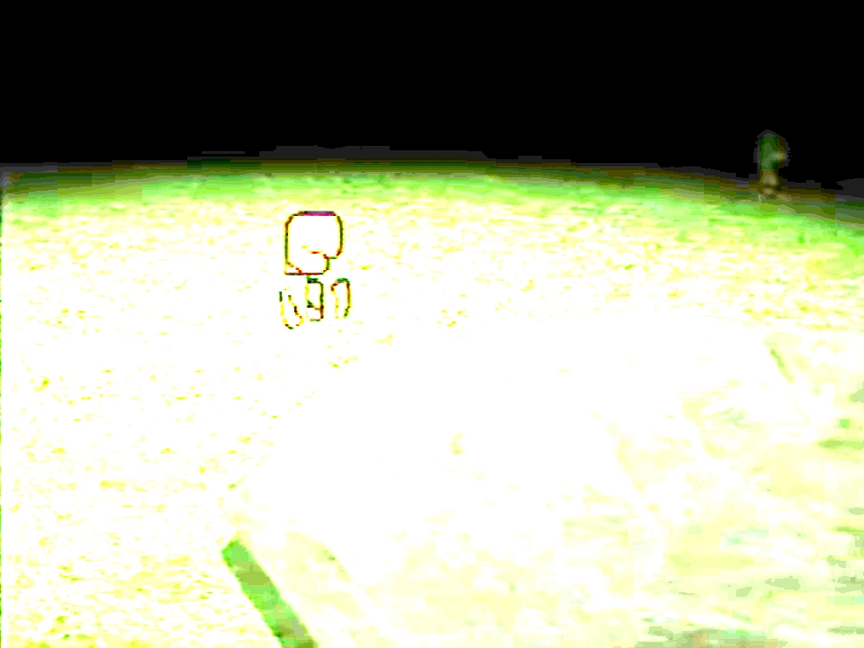

Marvin

{kind=link}
Fanmade recreated sprite
Marvin is a recurring character in Petscop. In-game, he appears as a guardian with a distorted green head when viewed by other players; however, he appears as the default guardian from his own point of view. He typically moves faster than other players.
Marvin Mark is a character within the series that the in-game Marvin represents. He is Anna's husband and Care's father. He was one of the earlier players of the Petscop game, with some recordings (shown in Petscop 20) showcasing him playing in various gens over some time in 1997.
Marvin is typically represented by green text. (This is shared with Randice.)
History
In-game character
{kind=link}

{kind=link}
Brightened image of Paul walking around the windmill foundation, where Marvin can barely be seen nearby.
Marvin first appears in Petscop 4 walking up near the windmill, though obscured by darkness to the point of barely being visible while Paul is running around the windmill's foundation in the Newmaker Plane. Paul does not notice him before Marvin walks away, and does not seem to acknowledge this at all.
Marvin is first mentioned by name in Petscop 5 from the pink tool; in response to Paul asking "Why?" when it asks him to turn off the PlayStation, the pink tool responds with "MARVIN PICKS UP TOOL HURTS ME WHEN PLAYSTATION ON".
In Petscop 6, while Paul is idling at the windmill screen in the tool room, Marvin arrives in front of the camera as a "shadow monster man". He reverses the windmill's direction, turns the camera, and spells out a message by spawning in letter blocks, among other game objects (including Toneth). Marvin asks "WHERE IS MY HOUSE" and "WHERE IS THE SCHOOL", and then says "I WILL FOLLOW" before leaving.
The character and the name presented in prior episodes were officially connected in Petscop 7 when the pink tool states "I LOVE YOU NEWMAKER PLEASE SHOW MARVIN WHERE HIS HOUSE IS" to Paul.
Marvin makes his first direct appearance unobstructed in Petscop 8, where he walks through the hallway with the paintings of the windmill, the house, and the school. He then runs into a wall for some time until walking forward and upward, as if he was walking up stairs that Paul could not see.
In Petscop 11, while Paul is locked inside the closet in Care's room, Marvin barges in through the window, knocking down the air conditioner and abducting Care. After the room resets, Paul walks out of it to find Marvin running into the garage through a closed door.

{kind=link}
A loading screen showing Marvin and the Needles Piano (brightened). Appears upon entering the school.
Two recordings are shown in Petscop 11 as well, both of which feature Marvin. In the first recording, Marvin meets with the player outside the school and greets them using P2 to TALK, referring to them as "Pall", before walking inside the school. When Paul enters the school, he gets a loading screen of a different head (also of Marvin) with the Needles Piano in front of it. In the second recording, the player enters a classroom to find Marvin, who wants them to play music on the Needles Piano. Marvin is pleased when the player plays the music properly, but when they begin playing "bad music", Marvin appears to get upset and tells them to stop. Once the player stops, Marvin tells them that "Tiara plays bad music too" and to "do it right next time".
Marvin appears briefly in Petscop 12, but does not say anything. His movements are the same movements as his movements from the first recording shown in Petscop 11 when entering the school, synced up until he reaches the school entrance, where he then stops in place mid-animation.
At the beginning of Petscop 14, a recording is shown through demo playback of Marvin's gameplay from an unknown time period. He is exploring the master bedroom and interacts with a miniature windmill on the table, which brings up text boxes addressed to Marvin that pose a puzzle to him. Later in the episode, Paul acknowledges seeing this recording, and that the player in it is Marvin.
In the recording that makes up Petscop 15, after the player enters a classroom on the second floor of the school, Marvin is already there. The player attempts to say "Marvin" using P2 to TALK, and then Marvin tells them to sit and wait for "the present". Marvin leaves, then comes back a few moments later with Tiara, who he introduces as "Bell". Marvin then leaves the room again, leaving the player and Tiara alone, where Tiara asserts she is called "Tiara" and not "Bell(e)".
In Petscop 17, a sound titled "Marvin Message" (presumably Marvin's P2 to TALK sound) is seen in the Sound Test.
In Petscop 19, a recording titled "marvin" can be seen in the list.
The "marvin" recording, among some others that are of Marvin playing Petscop in 1997, are shown in Petscop 20. In the first recording shown ("marvin" - in gen 6), Marvin starts a new file of Petscop and names his file "MVM". He appears to directly go towards Roneth's room and repeatedly tries to enter the code from the note, until finally successfully doing so and entering the Newmaker Plane. He does not find anything of interest, until a new gen is available in another auto recording. Textboxes begin appearing addressing Marvin by name, addressed from Rainer, which discuss that as of July 10, 1997, Care is still missing and the family is still looking for her. Rainer discusses how he wants Marvin to find a certain grave in-game, which he believes Marvin should know what he means. Marvin's walking speed is increased so he can "search" faster. In another auto recording in a different gen, Rainer shows Marvin the "road map" room and the caskets, which seem to talk about Marvin's school building, that Marvin was kicked out of his house, and that he was trying to show Care her reflection in a vase to make her believe she was ugly. Marvin then leaves the room and views the three pictures of the windmill, house, and school. After a cut in the video, Marvin is in the tool room. He begins to type out questions to the red tool: first, "did you di"- which is undone, instead asking "did you find lina?" and then "who is your boss?" to which the red tool responds with "I don't know". He then asks "what year is it?" in which he is shown the green "1997" calendar. Marvin then interacts with the windmill screen, where he can move the position of the camera; he moves it down into the room and turns it around, which shows a symbol block.


{kind=link}
A loading screen showing a side view of Marvin's head. Loads with the recording shown in Petscop 23.
In Petscop 23, a recording begins to play, which initially has a loading screen of an undistorted Marvin head from the side.
In the recording, the player finds Marvin in the classroom beyond the computer room on the third floor of the school. Marvin asks the player, referring to them as "Pall", to show him which ghost room he is currently in with P2 to TALK. After the player indicates they are in room 1, Marvin thanks them and then says "here I come". The player reacts in distress to this, and they both stop interacting for an unknown extended period of time. Sometime later (the video is cut), Marvin leaves the room. Later in the episode, the player walks into the machine room in the school basement to find Marvin and Tiara. Marvin tells him to place Care B into the machine and then play the Needles Piano after he does so. After the player starts playing "bad music" again, Marvin gets angry, and leaves after the player does not listen to him telling him to stop playing.
Indirectly addressed references
In Petscop 3, Paul finds a note in Care's Child Library room, that appears to be for Marvin. The note discusses a conversation where Anna brings up to Marvin that Care isn't growing eyebrows; Marvin replies with "that's a puzzle", but is secretly excited to hear this. It then discusses Marvin having a different child in mind to "pick next". It then goes back to discussing an event involving Care, where she walked into Marvin's school building with Marvin, but ran out crying because she believed that nobody loved her.
In Petscop 9, Paul finds a note in Lina Leskowitz's Child Library room, addressed from Rainer, that appears to be for Marvin. The note discusses an incident in 1977 where Marvin visited a windmill with his friend (Lina) and his friend's sister (Anna), where the windmill and his friend disappeared (see Windmill incident), along with events that followed, such as his marriage to Anna and their child (Care) believed to be his friend "reborn". Rainer seems to imply that he believes Marvin knows where the windmill and his friend went.
In Petscop 17 during Room Impulse playback that includes textboxes addressing Care, Marvin is indirectly discussed in relation to Care:
- Marvin is directly named as Care's father.
- On November 10, 1997, Care ran away from "[Marvin]'s school building".
- Care was kidnapped to this school building, and forced to "study" for five months.
- Supposedly, at some point in the past, a girl with some importance to Marvin went missing. Marvin put up "birthday girl" signs and sat on a bench with a cake for this girl, hoping it would lure her home. He was disappointed when this did not work.
Notes
In a demo recording shown at the end of Petscop 11 within the school, Marvin refers to Tiara as "Tiara", though indirectly. In another demo recording shown in Petscop 15, after bringing Tiara in a classroom, Marvin introduces Tiara as "Bell(e)". (Tiara disputes this once Marvin leaves.) This inconsistency does not have a known explanation.
Theories
According to the message from the pink tool, Marvin is hurting whoever is speaking through it - most likely Tiara.
The phrase "MARVIN PICKS UP TOOL" is not completely understood. It could be that Marvin is using some sort of tool (not tools) to hurt Belle. This message might also be referring to the smaller red tools found in Care and Mike's Child Library rooms.
| People | Paul · Belle · Carrie · Marvin · Rainer · Anna · Mike · Lina · Jill · Daniel |
|---|---|
| Characters | Guardian · Amber · Pen · Randice · Roneth · Toneth · Wavey · Care · Tiara |